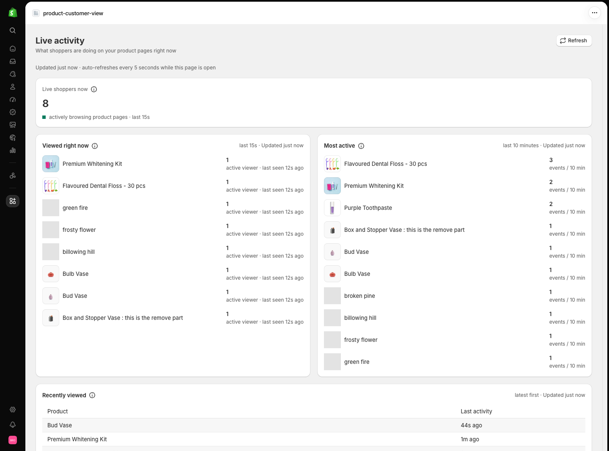
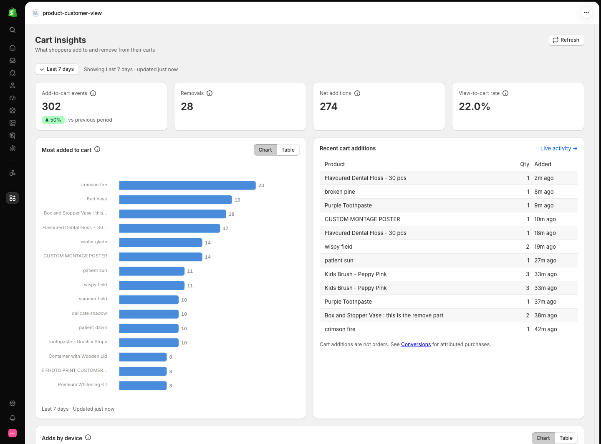
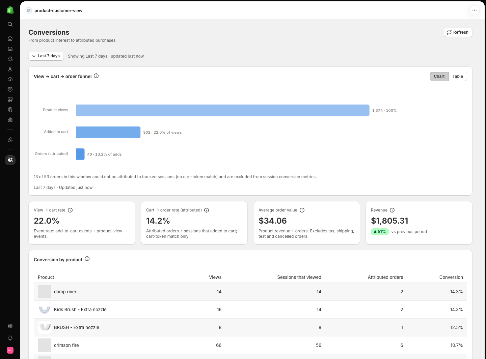
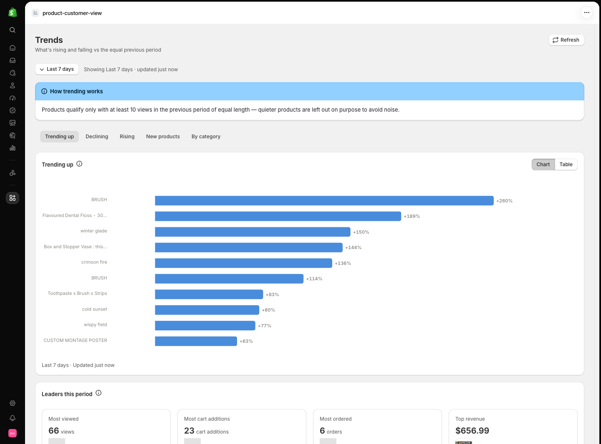
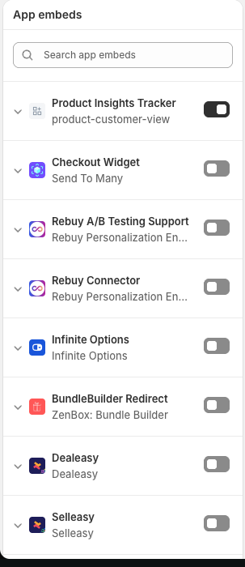
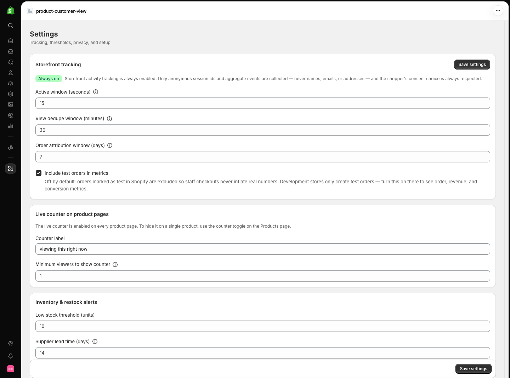

Live product activity for Shopify
See what shoppers are doing on your store, right now.
Live Product Insights turns live product views, cart additions, and orders into honest, decision-ready numbers — every metric shown with its time window, and never a fake count.
Why merchants watch
Three questions, answered honestly
Most counters tell you a number. This app answers the questions behind the number — without inventing anything along the way.
What's popular right now?
Live viewers per product, most-viewed rankings, recently viewed lists, and a live activity feed — refreshed every few seconds, with the time window always shown.
What turns interest into buying intent?
Add-to-cart events, removals, and view-to-cart rates reveal which products shoppers mean to buy — and which only get a glance. Cart additions are always labelled as interest, never as orders.
What should you do next?
High views with weak carts, demand outrunning stock, rising products, falling interest — every insight ships with its evidence, the period it covers, and a suggested next step.
Inside the app
From live pulse to purchase — one dashboard
Twelve admin pages cover live activity, cart behaviour, conversions, trends, behaviour patterns, inventory, insights, alerts, and reports. These are the highlights.
Watch interest as it happens
The Live activity page is your store's pulse: which products have active viewers this second, which got the most attention today, and what shoppers touched in the last hour.
- Active viewers per product, refreshed every 5 seconds
- Most viewed, most active, and recently viewed rankings
- A live feed of product views and cart events
- The storefront counter reads from the same real count

Interest you can act on
Cart activity is the strongest pre-purchase signal your store produces. See what's being added, what's being pulled back out, and how browsing turns into intent.
- Additions, removals, and net additions for any window
- View-to-cart rate — always labelled as an event rate
- Most added-to-cart ranking across your catalog
- A live feed of recent cart additions

Purchases, with honest attribution
Orders come straight from Shopify's own order webhooks. When an order can be linked to a tracked session through the cart token, it's attributed — and when it can't, it's excluded and labelled rather than quietly counted.
- View → cart → order funnel with clear stage counts
- Revenue by product and average order value
- Attribution matched via cart token within a window you set
- Unattributable orders are excluded — and the page says so

Catch products on the way up
Trending compares equal-length periods and requires a minimum activity threshold before flagging anything — so a quiet Tuesday never looks like a breakthrough, and real momentum doesn't slip past you.
- Trending up, declining, and rising interest lists
- Equal-length period comparison — never cherry-picked
- Minimum-activity threshold keeps noise out of the signal
- Category leaders and new-product performance

Beyond the charts
Inventory & demand
High interest with low stock, popular-but-out-of-stock products, selling fast with low cover, and a restock review list that ranks what to check first.
Inventory guideOpportunity insights
An insight feed generated every 30 minutes: each finding states its evidence, the period it covers, and a concrete suggested next step.
Insights guideAlerts
Traffic spikes, activity drops, cart-change alerts, and low-stock alerts against your own thresholds — checked every 15 minutes, delivered in-app or by email.
Alerts guideReports & export
Daily summaries, weekly comparisons, scheduled email reports, CSV exports, and a custom date range for measuring any campaign exactly.
Reports guideOn your storefront
A counter your shoppers can trust
The Live View Counter sits under your product title and shows the real number of active shoppers — the same count your dashboard uses. When nobody’s looking, it says nothing at all.
- Edit the label, live-dot color, text color, and background from the theme editor
- Set a minimum viewer count — below it, the counter hides instead of guessing
- Drag it anywhere on the product template; no code required
- Polls a lightweight stats endpoint every 5 seconds and is read politely by screen readers
Setup
Live in about five minutes
Two theme toggles and one settings check. If the dashboard is empty at first, that’s expected — tracking starts the moment your theme setup is complete.
Install the app
Install from the App Store or your install link. The app asks for read access to products, inventory, and orders, plus an app proxy to talk to your storefront securely. Takes about five minutes.
Flip two switches in your theme
Enable the Product Insights Tracker app embed, then add the Live View Counter block to your product template. No code, no liquid edits — theme setup guide.
Watch the first data land
Views appear within a minute of a consented visit; orders within about a minute; alerts are checked every 15 minutes; insights regenerate every 30. The first-data guide shows what to expect, and when.

Calibration
Tuned to your store, not ours
Every measurement rule that shapes your numbers is a setting — windows, thresholds, wording, colors, and retention. Defaults are sensible; nothing is locked.
- Counter label
- Your wording, your tone
- Minimum viewers to show counter
- Hide below a threshold
- Live dot, text & background color
- Match your brand
- Active window
- How long a viewer counts as active
- View dedupe window
- 30-minute default
- Order attribution window
- 7-day default
- Include test orders
- For dev-store evaluation
- Low stock threshold
- Your number, not ours
- Supplier lead time
- Feeds restock urgency
- Raw-event retention
- 7–365 days · 90 default
- Timezone & currency
- Correct day and money boundaries

Privacy & trust
Built to know less, not more
The app was designed so it can’t collect personal data — and its promises are enforced by Shopify’s own platform rules, not just policy text.
What’s collected
- Anonymous session IDs — no accounts, no profiles
- Aggregate product events: views, cart additions, removals
- Device class (mobile / desktop) in aggregate
- Referrer host and campaign parameters, first visit only
- Order figures from Shopify to compute revenue metrics
What’s never collected
- Names, email addresses, or postal addresses
- IP addresses
- Message or note content
- Third-party cookies or cross-site trackers
- Anything that identifies an individual shopper
Tracking integrates with Shopify’s Customer Privacy API. Analytics declined means nothing recorded. No consent API on your store? The tracker waits briefly, then records anonymous events — add a banner to keep tracking strictly opt-in.
Raw events are deleted after 90 days by default — configurable from 7 to 365. Active-viewer records expire on their own within days. Daily summaries are what persist.
Shopify’s mandatory customers/data_request, customers/redact, and shop/redact webhooks are implemented — and uninstalling wipes the store’s data immediately.
Straight answers
Frequently asked questions
No — that's the founding rule of the app. The counter only shows the real number of active shoppers the tracker currently sees, and it hides itself when that count is zero or below your minimum. Every metric in the app displays its time window and its source.
Never, and the app keeps them visibly separate. Cart pages count add-to-cart events; orders come from Shopify's own order webhooks. Dashboards label cart additions as interest, and the cart pages say so in plain text: cart additions are not orders.
When an order's cart token matches a tracked shopping session within the attribution window you set (7 days by default), the order can be attributed to that session. Orders with no match are excluded from session conversion metrics — and the page tells you how many were excluded, like "13 of 53 orders could not be attributed".
The storefront script is small and anonymous: events are batched and sent with sendBeacon, heartbeats pause when the tab isn't visible, and the counter polls a lightweight stats endpoint every 5 seconds. There are no third-party cookies and no external trackers.
Yes. The tracker integrates with Shopify's Customer Privacy API: consent denied means nothing is recorded, and consent pending means it waits. If your store doesn't use a consent API at all, the tracker can't ask — it waits briefly and then records anonymous events. Adding a consent banner keeps tracking fully opt-in.
As little as possible: an anonymous session ID, aggregate product events, device class, and session-level referrer/UTM. Never names, emails, addresses, or IP addresses. Raw events are deleted after 90 days by default (configurable 7–365 days), and uninstalling the app deletes the store's data immediately.
Admin access to your store and two toggles in the theme editor — the tracker app embed and the counter block. No code and no liquid edits. Then confirm your timezone and currency in Settings so day boundaries and money values are right. The installation guide walks through all of it.
There's no Shopify billing subscription in the app today, and pricing hasn't been announced. Install access is currently provided through install links — the installation guide covers everything that follows.
No. Only product pages are tracked — views, cart actions, and the counter live on product templates. Homepage and collection browsing isn't recorded, which keeps the data focused on purchase-relevant behaviour.
More questions? The troubleshooting guide covers almost every edge case.
Your store is already telling you what to do next
Install Live Product Insights and watch real activity — views, carts, and attributed orders — land in your admin within minutes of setup.
About five minutes to set up · two theme toggles · anonymous by design